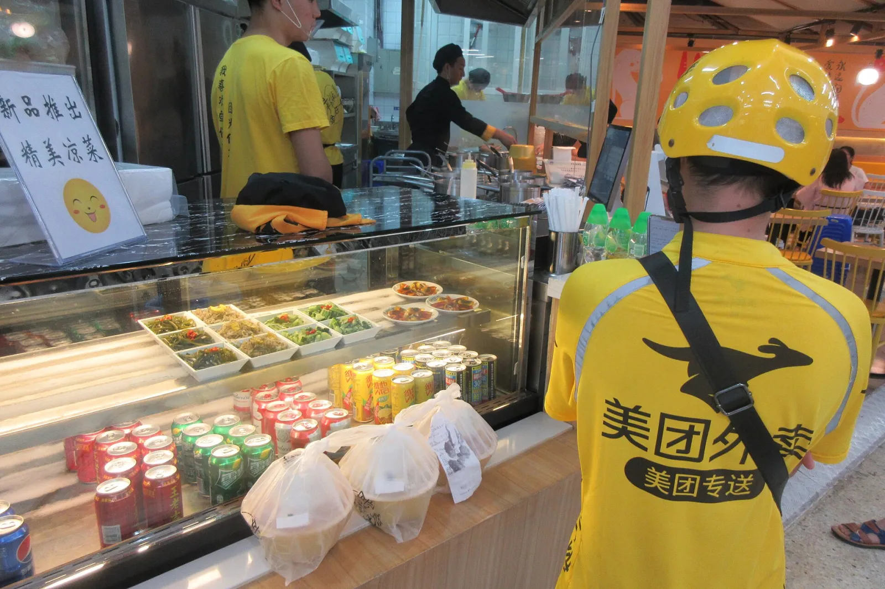

I designed the systems behind Alibaba and TikTok. Now I build and ship my own.
Four years on large platforms taught me how real systems work: support at Taobao’s scale, and a two-sided delivery business at TikTok. Today I build and ship Hey Atu, a live AI product, as full-stack + UX. Three projects, one path.
Designer at scale → product builder → developer.
A merchant chatbot that solves the problem, not just answers it
Taobao merchants send 200,000 support questions a day: orders, fulfilment, promotions, platform rules. I was the sole designer of the merchant chatbot and Help Center, and owned the ticket, escalation and permission modules of the agent workspace. Engineers built it. This was before LLMs: decision trees and good content.

How the resolution rate went up: four levers
ProblemThe bot replied with an article; the merchant still had to find the fix.
ChangeEvery branch of the tree ends in an action: a button, form or shortcut that does the fix.
ProblemQuestions were sorted by internal department, not by what the merchant was trying to do.
ChangeA tree built on merchant tasks: listing → order → fulfilment → after-sales. Guided questions narrow the case in a few taps.
ProblemThe bot is only as good as its content: 3,000+ articles, 5 levels deep, duplicated topics.
ChangeCard sorting with 16 merchants → 4 domains, 3 levels, semantic tags. Intents link straight to articles. Resolution 52% → 81%, search-to-answer −35%.
ProblemWhen the bot failed, merchants repeated everything to a human.
ChangeThe conversation and diagnosis go to the agent, who gets AI reply suggestions in one panel. Failure is cheap, so the bot can stay strict.
Measured per node: categorisation accuracy, comprehension time and label clarity. Weak nodes were renamed and re-tested.
How the conversation was designed
- Progressive disclosure: one decision per turn; the merchant never sees the whole tree.
- Guided questions first, free text as the fallback.
- Quick actions inside the chat: reply buttons and shortcuts into seller tools.
- One taxonomy, three surfaces: chatbot, Help Center and agent workspace share it, so a case keeps its shape as it moves.


What still holds for AI products
- Design the outcome, not the reply: a conversation should end in a finished task.
- Content and structure are still the product. An LLM is only as good as what it retrieves.
- Hand-off is a feature: know when to stop, and pass the context on.
- Measure per intent and fix the weak nodes.
If I built it today with an LLM: the tree becomes the guard-rails, not the interface; quick actions become tool calls with a confirmation step; the Help Center becomes the retrieval source, so the information architecture matters more, not less.
Order First, Then Delivery: launching a new business fast
On Douyin (TikTok China), people get hungry watching food videos, but not right now. TikTok Local Life let them buy a meal voucher in the moment and schedule the delivery later. A consumer team owned the traffic and the shopper flow. I designed the merchant side and the rider side, starting on site at the delivery stations.
Why it was new
Content creates desire before hunger. Classic delivery apps only catch hunger. The voucher stores the intent; delivery turns it into an order later.

Who did what
How to start a new business fast
Merchants already had dine-in menus and voucher tools. One click copies a dine-in menu into a delivery menu; only price, stock and packaging differ.
One week on site at delivery stations before designing anything, to see how dispatch really worked.
Dispatch MVP in one month: an order board and drag-to-assign. Then AI scheduling suggestions that the manager approves or overrides.
A data dashboard from day one. The same model was later reused for other local services.

Hands-on: on site at the delivery stations
TikTok was building its own delivery network in high-volume cities: Shanghai, Beijing and Shenzhen. With the product managers I went on site and mapped who does what. A station covers about 5 km and runs on a station manager, a dispatcher and 50–100 riders. Dispatch happened in chat groups and spreadsheets.
- Peak hours: slow response, some riders overloaded while others waited.
- No view of route efficiency.
- New stations: inexperienced riders and spiky demand from live streams.

- Station-based rider. “美团专送” (Meituan Zhuansong) riders belong to a delivery station; the station manager and dispatcher assign their orders.
- The hand-off. Packed orders wait at the counter. Every minute here is dispatch time we wanted to cut.
- Merchant prep time. When the kitchen finishes decides when a rider should arrive, so dispatch has to see merchant status too.


Merchant side

Rider and dispatch side

Why it matters for engineering: a real-time operations UI, a person overriding an algorithm, and a two-sided system where one change has to work for merchants, riders and users.
Hey Atu: shipping a complete product
Hey Atu lets Claude and ChatGPT use your own computer, so you can ask from your phone and the work runs at home. It is live at heyatu.com with paid plans. This is where I moved from designer to full-stack + UX: I own the product, the UX and the front end I write; my engineering partner builds the agent, relay and app; we ship together.

Product
Problem: your AI agent and your files live on your computer, and you are not always at it.
- Files stay home. Execution stays on the user’s computer; the relay cannot read phone messages.
- Two trust steps. Link a computer, then allow each AI app. One command revokes everything.
- MCP first, iOS next. It works inside Claude and ChatGPT today, without waiting for App Store review.
- One account, one plan across MCP and iOS: Stripe subscription with a 7-day trial.

Architecture
Who did what
How we ship
Product principle → design → written acceptance criteria.
Built with AI coding tools; every change is reviewed before it merges.
Acceptance runs on real devices before release, with results recorded.
Test → production channels; the app and the desktop agent release independently.


What moving into full-stack taught me
- Architecture choices are product choices: end-to-end encryption decides what the app can show.
- Writing acceptance criteria made me think in states and failure cases, and read the code that handles them.
How I work with AI tools
I come at engineering from UX, so I don't always know the architecture underneath. I describe the concrete use case and what the person should see, then have AI tools explain each option, check each other's answers, and spell out what each choice costs. Then I decide.
My creator-business app runs on a home computer and had to be reachable from my phone. I didn't know the hosting options, so I had AI compare a VPS, fully hosted Cloudflare (Workers, R2, D1) and a Cloudflare Tunnel, and recompute the free-tier limits from our real data.
ChoiceThe Tunnel: no open ports, no VPN app on the phone. The trade-off: the app is down when that computer is off.
AI produces a convincing landing page in minutes. The Hey Atu story took many rounds: the one-line hero, which scenario leads, and showing what it can do before teaching how to pair.
AI also hid the waitlist email field behind a button. I kept a plain input box, because signing up is the one thing the page must do.
BugOn iPhone, page content showed through above the sticky nav. The AI fixed it twice, checking only in desktop browsers; on my phone it was still broken.
CauseI had it reproduce the bug in iOS Safari instead of guessing. iOS 26 Safari reads the top bar's colour once, at page load: our nav was transparent at load, and a grain overlay sat on top of it.
FixA solid nav from the first frame, with the overlay moved underneath. Same pattern with the mascot: its transparent video left ghost trails on iPhone, so we baked it onto the tile colour, one video per theme.
Alibaba and ByteDance details are simplified to respect confidentiality.